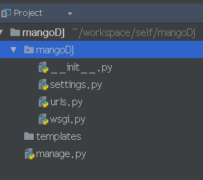
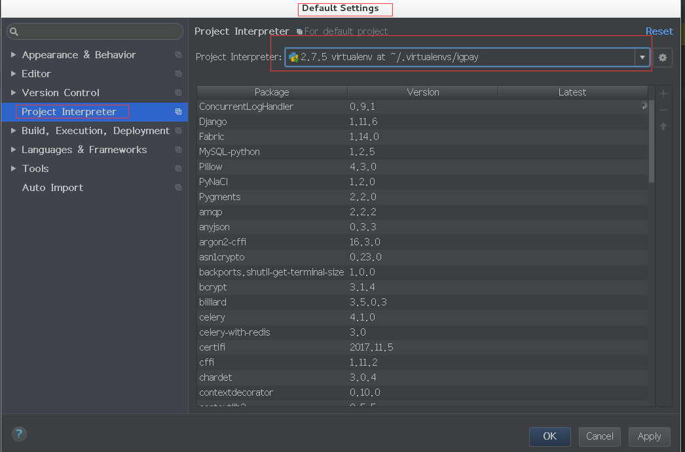

django创建虚拟环境、自定义用户、用户拦截以及项目的搭建
项目地址：mangoD
1. 创建虚拟环境
- 在创建虚拟环境之前先说下虚拟环境的作用：
- pyhton虚拟环境可以使python程序拥有独立的库和解释器，不和其他的程序共享，避免了不同python程序的相互的影响。
用户也可以直接在安装了python的环境中安装django框架
pip install django现在来说说怎样在centos中安装虚拟环境
首先先安装virtualenv以及virtualenvwrapper模块，命令如下所示：
sudo pip install virtualenv sudo pip install virtualenvwrapper然后再创建虚拟环境的目录并且配置环境变量
mkdir /home/your/.virtualenv # 其中.virtualenv可以是其他的名字只要与环境变量中的对应就可以了 vi /home/your/.bashrc在.bashrc文件中添加一下语句
export WORKON_HOME=/home/your/.virtualenvs export VIRTUALENVWRAPPER_SCRIPT=/usr/local/bin/virtualenvwrapper.sh source /usr/bin/virtualenvwrapper.sh保存并退出：wq
运行
source /home/your/.bashrc
此时virtualenvwrapper就可以使用了，常用命令：
创建虚拟环境
mkvirtualenv envname # 其中envname就是你需要创建的虚拟环境的名字切换环境：
workon envname列出已有的环境：
workon退出环境
deactivate删除环境
rmvirtualenv
安装好了虚拟环境之后我们需要创建一个虚拟环境
mkvirtualenv mango，在/home/your/.virtualenvs我们可以看到一个文件夹mango，这个文件夹就是我们的虚拟环境的目录然后我们需要切换到刚刚创建的
mango环境中：workon mango然后我们需要安装django，
pip install Django==1.11在这个步骤我们可以将需要安装的包写在一个文件(requrement)中， 在文件中的包有：
Django==1.11 MysqL-python==1.2.5然后通过命令
pip install -U -r requrement就会自动将文件中的包安装好
接下来就需要我们创建自己的项目了
2. 创建项目
打开pycharm（也可以是其他的IDE），点击file->New Project，此时会弹出一个创建项目的弹出框，在左边选择Django，在右边选择对应的目录（在选择的时候就创建一个文件夹作为项目路径和项目名称
mangoDJ）， 然后选择对应的python环境，选择刚刚创建的mango的虚拟环境的目录对应的目录结构如下所示：

创建apps文件夹，将apps文件夹设置为源文件夹（点击项目mangoDJ右键mark Directory as ->source Root），之后将所有创建的app都放在该文件夹下面，并且在settings.py中添加如下代码：
sys.path.insert(0,os.path.join(BASE_DIR,'apps'))将templates标记为
Template Folder(点击项目mangoDJ右键mark Directory as ->Template Folder)
配置启动环境：
- 配置环境所需要的库文件：分别在setting和default setting中配置

- 然后再右上角点击
edit configration，添加django serevr，并且配置对应的端口号。
创建app
- 使用命令
python manager startapp account创建account模块，并将account放在apps文件夹下面,并且在setting.py中的INSTALLED_APPS添加account(每创建一个app最好都放在apps文件夹下面) - 在使用命令
python manager startapp web创建web模块，并将web放在apps文件夹下面,并且在setting.py中的INSTALLED_APPS添加web - 在使用命令
python manager startapp common创建common模块，并将common放在apps文件夹下面,并且在setting.py中的INSTALLED_APPS添加common
- 使用命令
在项目mangoDJ下创建static文件夹用于存放静态资源
在setting.py中配置如下信息：
# URL to use when referring to static files located in STATIC_ROOT. STATIC_URL = '/static/' # Additional locations the staticfiles app will traverse if the # FileSystemFinder finder is enabled. STATICFILES_DIRS = ( BASE_DIR / 'static', )配置这些信息可以访问到静态资源
3. 配置文件编辑
配置setting.py文件，主要配置数据库， 缓存等信息
数据库配置的格式：
DATABASES = { 'default': { 'ENGINE': 'django.db.backends.mysql', 'NAME': 'mango', # Or path to database file if using sqlite3. 'USER': 'root', 'PASSWORD': 'root', 'HOST': '127.0.0.1', 'PORT': '3306', # Set to empty string for default. }, }配置缓存(根据自己的情况可要可不要)
CACHES = { "default": { "BACKEND": "django_redis.cache.RedisCache", "LOCATION": "redis://172.0.0.1:6379/1", "OPTIONS": { "CLIENT_CLASS": "django_redis.client.DefaultClient", } } }
4. 用户请求拦截
在配置用户请求拦截的时候需要在配置文件中配置对应的
LOGIN_URL = '/user/login',LOGOUT_URL = '/logout'在common模块中创建require.py,并且添加如下代码（也可以参考这篇文章）：
# -*- coding: utf-8 -*-
def required(wrapping_functions, patterns_rslt):
if not hasattr(wrapping_functions, '__iter__'):
wrapping_functions = (wrapping_functions,)
return [
_wrap_instance__resolve(wrapping_functions, instance)
for instance in patterns_rslt
]
def _wrap_instance__resolve(wrapping_functions, instance):
if not hasattr(instance, 'resolve'):
return instance
resolve = getattr(instance, 'resolve')
def _wrap_func_in_returned_resolver_match(*args, **kwargs):
rslt = resolve(*args, **kwargs)
if not hasattr(rslt, 'func'):
return rslt
f = getattr(rslt, 'func')
for _f in reversed(wrapping_functions):
# @decorate the function from inner to outter
f = _f(f)
setattr(rslt, 'func', f)
return rslt
setattr(instance, 'resolve', _wrap_func_in_returned_resolver_match)
return instance
在urls.py中添加如下配置（一定要写在登陆url之前）：
urlpatterns += required( partial(login_required, login_url='user_login'), urlpatterns ) urlpatterns += [ url(r'user/login', web.view_home.login, name='user_login'), ]
5. 用户自定义编写
在
account模块中models.py编写自定义用户实体，需要在setting.py中配置实体类代码如下所示AUTH_USER_MODEL = 'account.Account'编写实体：
创建AccountManager
class AccountManager(BaseUserManager): def _create_user(self, username, password, is_staff, is_active, **extra_fields): if username: raise ValueError("the input username is error") if password: raise ValueError("the input password is error") user = self.model(username=username, password=password, is_staff=is_staff, is_active=False, **extra_fields) user.save(self._db) return user def create_user(self, username, password, **extra_fields): return self._create_user(self, username=username, password=password, is_staff=False, is_active=False, **extra_fields) def create_superuser(self, username, password, **extra_fields): return self._create_user(self, username=username, password=password, is_staff=True, is_active=True, **extra_fields)创建AbstractUser：
class AbstractUser(AbstractBaseUser, PermissionsMixin): # 用户名称 username = models.CharField(unique=True, max_length=30) # password = models.CharField(max_length=20, null=False, default='123456') is_staff = models.BooleanField(_('staff status'), default=False) is_active = models.BooleanField(_('active'), default=True) USERNAME_FIELD = 'username' REQUIRED_FIELDS = [] objects = AccountManager() class Meta(object): db_table = 'account' abstract = True def get_short_name(self): return self.get_username() def get_full_name(self): return self.get_username()创建Account：
class Account(AbstractUser): nick_name = models.CharField(max_length=30, default='') # login_date = models.DateTimeField(auto_now_add=True, editable=False, blank=True) class Meta(AbstractUser.Meta): permissions = ( ('person:info', '我的面板:个人信息'), ('person:modify-pwd', '我的面板:修改密码'), ('user:list', '平台用户管理:用户帐号管理'), ('user:score-manage', '用户管理:积分账户管理'), ) swappable = 'AUTH_USER_MODEL'
自定义用户认证，在setting配置对应的认证的类，如下：
# -*- coding: utf-8 -*-
from django.contrib.auth.backends import ModelBackend
from django.db.models import Q
from account.models import Account
class AccountBackend(ModelBackend):
def authenticate(self, username=None, password=None, **kwargs):
try:
user = Account.objects.get(Q(username=username))
if user.password == password:
return user
except Account.DoesNotExist:
return None
return None
在配置文件中配置自定义的权限认证的类：
AUTHENTICATION_BACKENDS = ( 'common.account_backend.AccountBackend', )